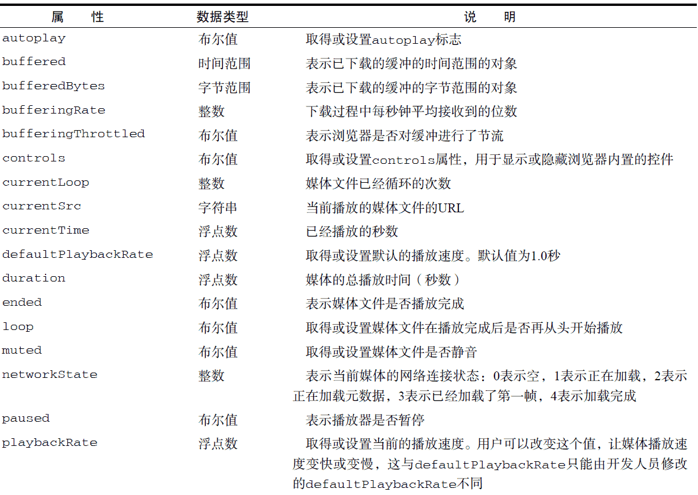
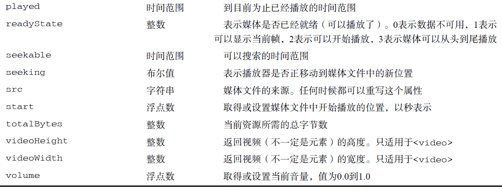

<!-- 嵌入视频 --> <video src="conference.mpg" id="myVideo">Video player not available.</video> <!-- 嵌入音频 --> <audio src="song.mp3" id="myAudio">Audio player not available.</audio>使用这两个元素时，至少要在标签中包含src 属性，指向要加载的媒体文件。还可以设置width和height 属性以指定视频播放器的大小，而为poster 属性指定图像的URI 可以在加载视频内容期间显示一幅图像。另外，如果标签中有controls 属性，则意味着浏览器应该显示UI 控件，以便用户直接操作媒体。位于开始和结束标签之间的任何内容都将作为后备内容，在浏览器不支持这两个媒体元素的情况下显示。
<!-- 嵌入视频 --> <video id="myVideo"> <source src="conference.webm" type="video/webm; codecs='vp8, vorbis'"> <source src="conference.ogv" type="video/ogg; codecs='theora, vorbis'"> <source src="conference.mpg"> Video player not available. </video> <!-- 嵌入音频 --> <audio id="myAudio"> <source src="song.ogg" type="audio/ogg"> <source src="song.mp3" type="audio/mpeg"> Audio player not available. </audio>关于视频和音频编解码器的内容超出了本书讨论的范围。作者在此只想告诉大家，不同的浏览器支持不同的编解码器，因此一般来说指定多种格式的媒体来源是必需的。支持这两个媒体元素的浏览器有IE9+、Firefox 3.5+、Safari 4+、Opera 10.5+、Chrome、iOS 版Safari 和Android 版WebKit。


<div class="mediaplayer"> <div class="video"> <video id="player" src="movie.mov" poster="mymovie.jpg" width="300" height="200"> Video player not available. </video> </div> <div class="controls"> <input type="button" value="Play" id="video-btn"> <span id="curtime">0</span>/<span id="duration">0</span> </div> </div>运行一下
//取得元素的引用
var player = document.getElementById("player"),
btn = document.getElementById("video-btn"),
curtime = document.getElementById("curtime"),
duration = document.getElementById("duration");
//更新播放时间
duration.innerHTML = player.duration;
//为按钮添加事件处理程序
EventUtil.addHandler(btn, "click",
function(event) {
if (player.paused) {
player.play();
btn.value = "Pause";
} else {
player.pause();
btn.value = "Play";
}
});
//定时更新当前时间
setInterval(function() {
curtime.innerHTML = player.currentTime;
},
250);
运行一下if (audio.canPlayType("audio/mpeg")){
//进一步处理
}
而"probably"和"maybe"都是真值，因此在if 语句的条件测试中可以转换成true。var audio = document.getElementById("audio-player");
//很可能"maybe"
if (audio.canPlayType("audio/mpeg")) {
//进一步处理
}
//可能是"probably"
if (audio.canPlayType("audio/ogg; codecs=\"vorbis\"")) {
//进一步处理
}
注意，编解码器必须用引号引起来才行。下表列出了已知的已得到支持的音频格式和编解码器。var audio = new Audio("sound.mp3");
EventUtil.addHandler(audio, "canplaythrough", function(event){
audio.play();
});
创建新的Audio 实例即可开始下载指定的文件。下载完成后，调用play()就可以播放音频。